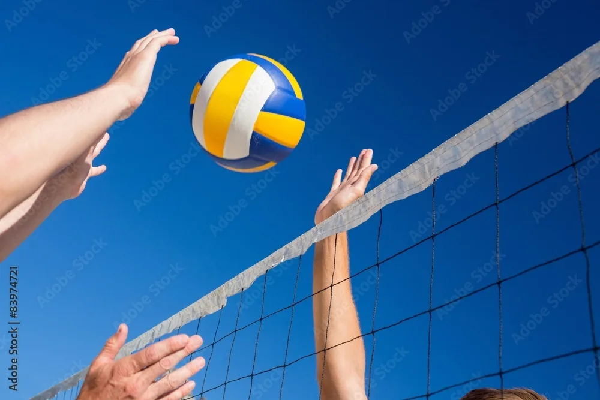

Небольшая подборка тем, которыми я живу, которые изучаю и к которым возвращаюсь снова и снова.
Занимаюсь с 2022 года, побывала в разных коллективах. Амплуа - цб, но хочется играть доигровкой.
Волейбол помогает мне выплеснуть эмоции и потратить энергию (если она у меня вообще остается).

Есть, конечно, люблю больше чем готовить, но в свободное время готовка помогает мне отвлечься от своих мыслей и доказать своим домашним, что руки у меня из плеч растут
Больше нравится выпечка, оч вкусные пироги умею готовить!!!
В школе старалась делать красивые презентации, позже открыла для себя фигму.
Начала делать картинки с котами, плакаты, слайды для презентаций.
Возможно в будущем можно будет перейти в портфолио